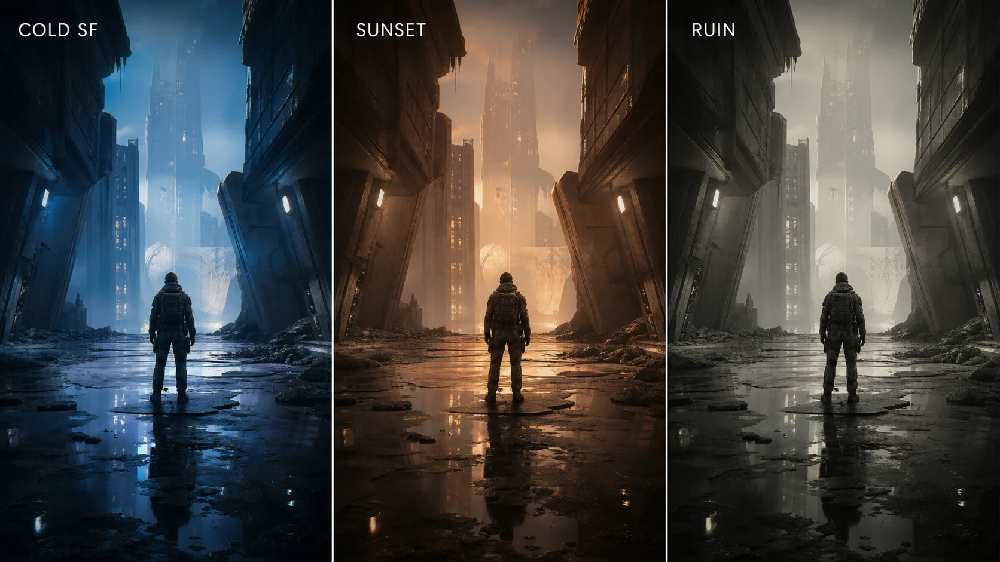
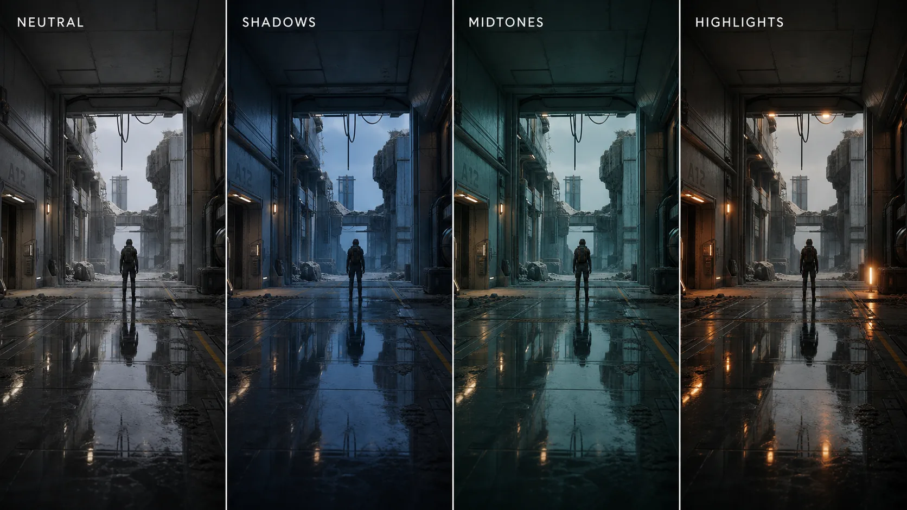
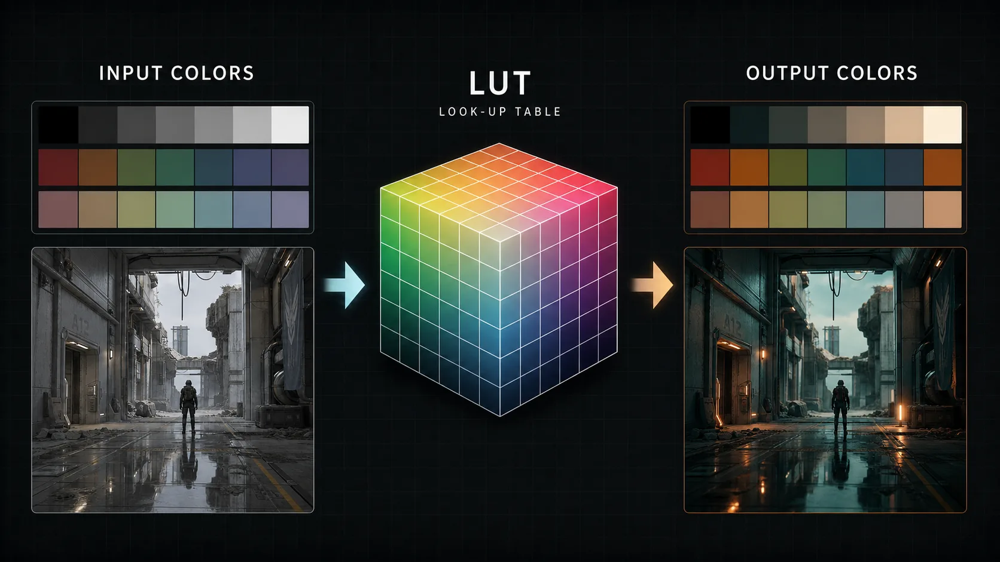

13주차 2교시 — 컬러 그레이딩 + LUT + Movie Render Queue (학생용)
관련 문서
| 관계 | 문서 |
|---|---|
| 강의 계획서 | 강의계획서: Game Engine II |
| 강의 아웃라인 | 13주차 아웃라인: 렌더링 및 컬러 그레이딩 |
| 1교시 핸드아웃 | 13주차 1교시: Post Process Volume + 분위기 이펙트 |
| 3교시 핸드아웃 | 13주차 3교시: 시네마틱 렌더링 워크플로우 실습 |
| 선행 12주차 3교시 | 12주차 3교시: 기말 컨셉 환경 블록아웃 |
- Post Process Volume의 컬러 그레이딩 컨트롤(White Balance, Global·Shadows·Midtones·Highlights)로 시네마틱 색감을 만들 수 있다
- LUT(Look-Up Table)의 개념을 이해하고 PPV에 적용할 수 있다
- Movie Render Queue의 역할을 이해하고 기본 출력 설정을 구성할 수 있다
1교시는 PPV 라는 그릇에 빛 번짐·초점 같은 효과를 담았습니다. 2교시는 그 PPV 안에서 색 그 자체를 다루고, 지금까지 만든 시퀀스를 렌더 결과물로 출력하는 도구까지 배웁니다.
2교시는 세 덩어리입니다. 앞의 두 덩어리 — 컬러 그레이딩과 LUT — 는 1교시처럼 PPV 안에서 하는 작업으로, 색으로 영화의 톤을 결정합니다. 세 번째 덩어리 — Movie Render Queue — 는 성격이 다릅니다. 지금까지 만든 시퀀스를 고품질 렌더 결과물로 출력하는 도구입니다. 본인 시퀀스에 직접 적용하고 출력하는 것은 3교시입니다.
- 1교시에 배운 후처리 도구와, 씬 전체에 적용하려고 켠 설정은? (Post Process Volume / Infinite Extent (Unbound))
- 시네마틱에서 Exposure 를 Manual 로 고정하는 이유는? (Auto Exposure 는 카메라가 움직이면 밝기가 출렁여 통제가 안 되므로)
심화 1 — 컬러 그레이딩
영화 〈매트릭스〉 하면 초록빛, 〈매드맥스〉 하면 주황과 청록이 떠오릅니다. 우연이 아닙니다. 영화마다 색의 톤을 의도적으로 설계하며, 그 작업이 컬러 그레이딩입니다.

같은 씬을 세 가지로 비교해 보면, 라이팅도 에셋도 후처리 이펙트도 모두 같은데 색감만 다릅니다. 그런데 한쪽은 차갑고 푸른 SF, 다른 쪽은 따뜻한 노을, 또 다른 쪽은 탈색된 폐허처럼 보입니다. 색 하나로 장면의 인상이 크게 달라집니다.
1교시에서 후처리는 '라이팅 위에 얹는 마감 레이어'라고 했습니다. 컬러 그레이딩은 그 마감 중에서도 색을 결정하는 부분으로, PPV 의 Color Grading 섹션에서 합니다. 여기서는 세 가지 — White Balance, Global, Shadows/Midtones/Highlights — 를 봅니다.
White Balance — 색온도와 틴트
White Balance(화이트 밸런스)는 '흰색을 어떻게 보이게 할 것인가'를 정하는 것입니다. 사진을 찍어본 사람에게는 익숙한 개념입니다.
| 값 | 역할 |
|---|---|
| Temperature(색온도) | 화면을 따뜻하게(주황) ↔ 차갑게(파랑) |
| Tint(틴트) | 화면을 초록 ↔ 자홍(마젠타) 쪽으로 |
Temperature 가 핵심입니다. 값을 한쪽으로 옮기면 화면 전체가 따뜻한 주황빛이 됩니다 — 노을, 실내 백열등, 포근한 회상 장면. 반대쪽으로 옮기면 차가운 푸른빛이 됩니다 — 새벽, 달밤, SF, 차갑고 외로운 장면. Temperature 하나만 움직여도 씬의 감정이 크게 바뀝니다.
Tint 는 보조입니다. 초록-자홍 축으로, 형광등 아래 같은 색 틀어짐을 잡거나 미묘한 색감을 더할 때 씁니다. 보통 Temperature 를 먼저 잡고, Tint 는 미세 조정으로 둡니다.
컬러 그레이딩의 첫 단추는 '이 씬을 따뜻하게 갈 것인가, 차갑게 갈 것인가'입니다. Temperature 로 그 큰 방향을 먼저 정합니다.
Global — 화면 전체의 색·밝기 조정
White Balance 가 따뜻함/차가움이라는 큰 방향이었다면, Global 은 화면 전체의 색과 밝기를 세밀하게 조정하는 컨트롤 묶음입니다.
| 컨트롤 | 무엇을 바꾸나 |
|---|---|
| Saturation(채도) | 색의 선명함 — 높이면 쨍하게, 낮추면 흑백에 가깝게 |
| Contrast(대비) | 밝은 곳과 어두운 곳의 차이 — 높이면 또렷하게, 낮추면 평평하게 |
| Gamma(감마) | 중간 밝기 — 화면의 미드톤을 올리고 내림 |
| Gain(게인) | 밝은 영역 위주의 밝기 |
| Offset(오프셋) | 화면 전체를 통째로 밝게/어둡게 이동 |
다섯 가지를 모두 외울 필요는 없습니다. 실무에서 가장 많이 만지는 것은 Saturation 과 Contrast 두 가지입니다.
- Saturation — 탈색된 폐허 느낌을 원하면 채도를 크게 낮춥니다. 색이 빠지면서 황량하고 무거운 분위기가 납니다. 반대로 활기찬 장면은 채도를 살짝 올려 쨍하게 만듭니다.
- Contrast — 대비를 높이면 그림자가 깊어지고 화면이 또렷하고 강렬해집니다. 누아르나 액션에 어울립니다. 낮추면 부드럽고 몽환적인, 빛바랜 느낌이 납니다.
Gamma·Gain·Offset 은 밝기를 어느 구간에서 건드리느냐의 차이입니다 — Gamma 는 중간톤, Gain 은 밝은 쪽, Offset 은 전체. 각 컨트롤에는 색상 휠도 붙어 있어, 밝기뿐 아니라 '그 구간을 어떤 색 쪽으로 밀지'도 정할 수 있습니다.
1교시 절제 원칙은 색에서도 똑같습니다. 슬라이더를 크게 올리는 것부터 시작하지 말고, 미세하게 전/후를 비교하면서 조정합니다. 색을 과하게 틀면 화면이 쉽게 부담스러워집니다.
Shadows / Midtones / Highlights — 영역 분리 그레이딩
Global 은 화면 전체를 한꺼번에 바꿉니다. 그런데 어두운 영역만, 밝은 영역만 따로 색을 바꿀 수도 있습니다. PPV Color Grading 에는 Global 말고도 세 묶음이 더 있습니다.

| 묶음 | 영향 범위 |
|---|---|
| Shadows(섀도) | 화면의 어두운 영역만 |
| Midtones(미드톤) | 화면의 중간 밝기 영역만 |
| Highlights(하이라이트) | 화면의 밝은 영역만 |
각 묶음 안에는 Global 과 똑같이 Saturation·Contrast·Gamma·Gain·Offset·색상 휠이 들어 있고, 영향 범위만 다릅니다.
이것이 강력한 이유는 영화에서 자주 쓰는 룩을 만들 수 있기 때문입니다. 예를 들어 그림자는 차갑게(푸른빛), 하이라이트는 따뜻하게(주황빛) — 이 청록-주황 조합이 할리우드 영화에서 가장 흔한 색 보정입니다. 인물 피부(하이라이트)는 따뜻하고 생기 있게, 배경 그늘(섀도)은 차갑게 만들면 인물이 배경에서 분리되어 보입니다.
Shadows 묶음에서 색상 휠을 파란 쪽으로 살짝, Highlights 묶음에서 색상 휠을 주황 쪽으로 살짝 옮기면, 한 화면 안에서 어두운 곳과 밝은 곳이 서로 다른 색온도를 갖게 됩니다. Global 만으로는 할 수 없는 일입니다.
Global 은 전체, Shadows/Midtones/Highlights 는 영역별입니다. 큰 톤은 White Balance + Global 로 잡고, 영역별 분리 그레이딩으로 깊이를 더합니다.
Color Grading 의 섹션 구조(White Balance / Global / Shadows / Midtones / Highlights)와 각 컨트롤 위치는 UE 버전에 따라 다를 수 있으므로 기능으로 찾으세요.
심화 2 — LUT 적용
컬러 그레이딩은 슬라이더가 수십 개라 손이 많이 갑니다. 멋진 색감을 한 번 잘 만들었을 때, 그 룩을 다른 씬에도 다음 프로젝트에도 똑같이 쓰고 싶다면 매번 슬라이더를 처음부터 다시 맞춰야 할까요? 그래서 나온 것이 LUT(Look-Up Table, 색 변환표)입니다.

LUT 를 한 문장으로 정리하면, '어떤 입력 색이 들어오면 어떤 출력 색으로 바꿔라'를 미리 구워둔 표입니다. 'A 색은 B 색으로, C 색은 D 색으로' 하는 변환 규칙을 파일 하나에 통째로 담아둔 것입니다. 비유하자면 사진 앱의 필터입니다. 필터 하나를 누르면 사진 전체 색감이 크게 바뀌는데, 그 필터가 LUT 에 가깝습니다. 컬러 그레이딩을 직접 세부 조정하는 방법과, LUT 로 룩을 한 번에 입히는 방법이 있다고 보면 됩니다.
LUT 적용 절차
LUT 도 PPV 의 Color Grading 섹션 안에서 적용합니다.
LUT 적용 절차
- 1. PPV 디테일 패널의 Color Grading 섹션에서 LUT 슬롯(Color Grading LUT)을 찾는다
- 2. 슬롯에 LUT 텍스처를 지정한다 (강사 제공 LUT 사용)
- 3. LUT Intensity 값으로 적용 강도를 조절한다 — 0 이면 적용 안 됨, 1 이면 완전 적용. 보통 그 사이에서 조절
LUT 를 100% 다 입히면 너무 강할 때가 많습니다. Intensity 를 0.5 정도로 낮추면 LUT 의 룩이 절반만 섞여 자연스럽습니다. 작은 강도에서 시작해 전/후를 비교합니다.
컬러휠 직접 vs LUT, 그리고 .cube 주의
LUT 만 쓰면 컬러 그레이딩 슬라이더는 만지지 않아도 될까요? 둘은 쓰임이 다릅니다.
| 방식 | 언제 |
|---|---|
| 컬러휠·슬라이더 직접 조정 | 이 씬에 맞는 색을 정밀하게 만들 때 |
| LUT 적용 | 검증된 룩을 빠르게, 일관되게 입힐 때 |
실무에서는 둘을 섞어 씁니다. LUT 로 기본 룩을 깔고, 그 위에 컬러 그레이딩 슬라이더로 이 씬에 맞게 미세 조정합니다. LUT 는 출발점, 마무리는 직접 — 1교시부터 이어진 패턴입니다. LUT 는 빠르게 특정 룩을 확인하는 데 좋지만, 최종 색 일관성은 Color Grading 컨트롤로 다시 다듬는 편이 안전합니다.
인터넷에서 받는 LUT 는 보통 .cube 파일 형식입니다. 그런데 언리얼의 Color Grading LUT 는 16×16×16 색 변환표를 256×16 이미지로 펼친 전용 텍스처 형식을 씁니다. 인터넷의 .cube 파일을 그대로 슬롯에 넣지 못하는 경우가 많아, 변환을 거치거나 처음부터 언리얼용으로 만든 LUT 텍스처가 필요합니다. 이 수업은 강사가 언리얼 형식으로 검증한 LUT 텍스처 1~2개를 제공합니다.
심화 3 — Movie Render Queue 기초
2교시 세 번째 덩어리는 성격이 완전히 다른 도구 — Movie Render Queue(줄여서 MRQ)입니다.
실시간 viewport vs 오프라인 고품질 렌더
11주차에 격투 시네마틱을 만들고 화면 녹화로 '제출'했습니다. 시퀀서를 재생하면서 viewport 화면을 그대로 녹화하는, 가장 간단한 방법입니다. 그런데 그것이 최종 렌더 품질의 기준일까요?
그렇지 않습니다. viewport 는 실시간으로 돌아갑니다. 1초에 화면을 수십 장 그려야 하므로 작업 중 미리보기에 맞춰 품질과 속도의 균형을 잡습니다. 계단 현상, 그림자 노이즈, 거친 반사가 보일 수 있습니다. 게임을 부드럽게 플레이하고 빠르게 확인하기에는 좋지만, 최종 출력 기준으로는 한계가 있습니다.
MRQ 는 반대로 오프라인 렌더입니다. 실시간 재생을 목표로 하지 않습니다. 한 프레임을 만드는 데 시간이 더 걸릴 수 있지만, 그만큼 더 높은 품질 설정을 적용하고 샘플을 여러 번 누적해 계단 현상이나 노이즈를 줄일 수 있습니다. 결과물의 품질 차이가 큽니다.
| 실시간 viewport / 화면 녹화 | Movie Render Queue | |
|---|---|---|
| 속도 | 실시간 (즉시) | 느림 (프레임당 수 초~) |
| 품질 | 미리보기 중심 품질 | 고품질 출력 |
| 용도 | 작업 중 미리보기, 빠른 확인 | 고품질 렌더 출력 |
11주차에 '고품질 렌더링은 13주차에'라고 미뤄둔 것이 바로 이 MRQ 입니다.
MRQ 열고 큐에 시퀀스 추가
MRQ 는 플러그인입니다. 대부분 기본 활성화되어 있지만, 비활성 상태면 Edit > Plugins 에서 켜고 에디터를 재시작해야 합니다.
MRQ 열고 시퀀스 추가하는 절차
- 1. Movie Render Queue 창을 연다 — Window > Cinematics > Movie Render Queue, 또는 Sequencer 의 Render Movie 버튼 옆 옵션에서 Movie Render Queue 선택
- 2. MRQ 창에서 + Render 로 출력할 Level Sequence(본인 시네마틱 시퀀스)를 큐에 추가한다
- 3. 큐에 시퀀스가 한 줄로 올라온 것을 확인한다
큐(Queue)는 이름 그대로 출력할 시퀀스를 줄 세우는 것입니다. 시퀀스를 여러 개 올려 한 번에 렌더할 수도 있지만, 보통 본인 시퀀스 하나만 올립니다. 큐에 시퀀스를 올리면 그 줄에 두 가지 링크가 보입니다 — Settings(설정) 와 Output(출력 위치). Settings 를 클릭하면 렌더 설정을 정하는 패널이 열립니다.
MRQ 진입 경로(메뉴 위치·아이콘)와 큐 추가 버튼 명칭은 UE 버전에 따라 다를 수 있습니다. UE 5.7 에는 노드 기반의 Movie Render Graph 도 있지만, 이 수업은 다루기 쉬운 Movie Render Queue(클래식)로 통일합니다.
기본 출력 설정
Settings 를 누르면 렌더 설정 패널이 열립니다. 항목이 많아 보이지만, 여기서 잡을 것은 수업용 기본 출력 설정입니다. 핵심 설정 다섯 가지와 PNG 출력 포맷만 봅니다.
① Deferred Rendering — 기본 렌더 방식 — 언리얼의 기본 렌더링 방식입니다. MRQ 설정에 기본으로 들어 있으며, 오늘은 '이 렌더 패스로 출력한다' 정도만 기억하면 됩니다.
② Anti-Aliasing — 계단 현상 제거 + 샘플 수 — 비스듬한 선이 픽셀 때문에 계단처럼 보이는 현상을 부드럽게 다듬습니다. 핵심 개념은 샘플(Sample) 수 입니다. MRQ 는 한 프레임을 만들 때 화면을 여러 번 계산해서 합치는데, 그 횟수가 샘플 수입니다. Spatial Sample(공간 샘플) 과 Temporal Sample(시간 샘플) 두 가지가 있습니다.
샘플 수를 올리면 계단 현상·노이즈·모션 블러 품질이 좋아질 수 있고, 대신 렌더 시간도 대체로 늘어납니다. 그래서 테스트할 때는 샘플을 낮게, 최종 출력은 높게 조절합니다. 전체 구간 렌더를 높은 샘플로 돌리면 수업 시간 안에 끝나지 않을 수 있습니다.
③ Console Variables — 추가 품질 옵션 — 언리얼에는 r. 로 시작하는 콘솔 명령어로 렌더링 품질을 세밀하게 조정하는 기능이 있습니다. MRQ 설정에서 이 콘솔 변수들을 렌더에만 적용할 수 있습니다. 고급 사용자가 그림자·반사 품질을 더 끌어올릴 때 쓰며, 이 수업은 기본값으로 둡니다.
④ Game Overrides — 렌더용 환경 정리 — 렌더링하는 동안 게임 관련 설정을 잠깐 바꿔주는 항목입니다. 예를 들어 렌더 시작 전에 텍스처가 모두 로딩될 때까지 기다리게 합니다. 깨끗한 출력을 위한 정리 옵션이며, 이것도 기본값으로 둡니다.
⑤ Output + PNG Sequence — 해상도·폴더·포맷 — 가장 실용적인 설정입니다. 두 종류를 구분해야 합니다.
| 항목 | 내용 |
|---|---|
| Output 설정 | 해상도(예: 1920×1080), 파일 이름, 출력 폴더 |
| 이미지 포맷 설정 | 어떤 이미지 시퀀스로 뽑을지 — 본 수업은 .png Sequence [8bit] |
UE 기본 설정에는 .jpg Sequence [8bit] 가 들어 있을 수 있습니다. 이 수업은 기본 경로로 PNG 이미지 시퀀스를 쓰므로, 필요하면 .jpg Sequence [8bit] 를 지우고 패널의 + Setting 버튼에서 .png Sequence [8bit] 를 추가합니다. 영상 파일 하나가 아니라 프레임마다 PNG 한 장씩 — 0001.png, 0002.png … — 나옵니다. 영상 파일이 아니라 이미지 낱장으로 뽑는 이유는 3교시에서 설명합니다.
Path Tracing 은 왜 다루지 않는가
언리얼에는 Path Tracing(패스 트레이싱) 이라는, Deferred 보다 더 사실적인 렌더 방식도 있습니다. 빛을 실제 물리처럼 추적해 더 사실적인 결과를 만들 수 있습니다. 다만 Path Tracing 은 GPU 부하가 매우 큽니다. 좋은 그래픽카드가 필요하고, 실습실 PC 에서는 수업 시간 안에 안정적으로 다루기 어렵습니다. 그래서 이 수업은 Path Tracing 을 '이런 것이 있다'는 언급 수준으로만 두고, 실습은 Deferred 기반의 기본 출력 설정으로 진행합니다. 본인 PC 사양이 좋으면 나중에 따로 도전해볼 수 있습니다.
흔한 문제 — Movie Render Queue
| 흔한 문제 | 원인 | 해결 |
|---|---|---|
| MRQ 창이 메뉴에 없음 | 플러그인 비활성 | Edit > Plugins 에서 Movie Render Queue 활성 + 에디터 재시작 |
| 렌더가 너무 오래 걸림 | 샘플 수·해상도가 높음 | 테스트는 낮은 샘플·짧은 구간으로. 전체 구간 렌더는 자율 |
| 출력 결과가 viewport 와 다름 | viewport 는 실시간 미리보기 | MRQ 출력이 최종 — viewport 와 약간 다른 것이 정상 |
| 큐에 시퀀스가 안 올라감 | Level Sequence 가 아닌 것을 선택 | 카메라·컷이 든 Level Sequence 를 큐에 추가 |
핵심 요약
색으로 영화의 톤을 만들고(컬러 그레이딩·LUT), Movie Render Queue 로 고품질 렌더 결과물을 출력한다.
- 컬러 그레이딩 — White Balance 의 Temperature 로 따뜻함/차가움의 큰 방향을 잡고, Global 의 Saturation·Contrast 로 다듬고, Shadows/Midtones/Highlights 로 영역별 분리 그레이딩
- LUT — 색 변환표로 룩을 한 번에 입히는 도구. UE 전용 텍스처 형식이라 강사 제공 LUT 를 쓰고, LUT Intensity 로 강도를 조절
- Movie Render Queue — 오프라인 고품질 렌더. 큐에 시퀀스를 올려 기본 출력 설정을 잡고
.png Sequence [8bit]로 PNG 이미지 시퀀스를 출력. 샘플↑ = 품질 개선 여지↑·렌더 시간↑
다음 시간 예고 — 3교시 실습 미리보기
3교시는 본인 시네마틱 시퀀스를 렌더링 워크플로우로 출력해보는 실습입니다.
본인 시네마틱 시퀀스에 ① 1교시의 Post Process Volume + 분위기 이펙트와 ② 2교시의 컬러 그레이딩(+선택 LUT)을 적용하고, ③ Movie Render Queue 로 PNG 이미지 시퀀스를 출력한 뒤 ④ 영상으로 인코딩합니다.
이 실습은 제출·채점 대상이 아닙니다. 14~16주차 기말 프로젝트에서 같은 렌더링 절차를 쓰므로, 3교시는 그 렌더링 워크플로우를 한 번 통과해보는 리허설입니다. 렌더 대상 시퀀스는 자유이며, 완성된 시퀀스가 없으면 11주차 격투 시네마틱 LS_RetargetDemo 를 렌더 연습 대상으로 쓰면 됩니다. 기본 완성은 PPV+이펙트 적용 + 컬러 그레이딩 + MRQ 테스트 렌더로 이미지 시퀀스 출력까지이고, LUT 적용·영상 인코딩·전체 구간 렌더는 시간이 남을 때의 확장입니다.
처음부터 전체 구간을 렌더하지 말고 테스트 렌더부터 합니다. MRQ 는 느려서, 높은 샘플로 전체 구간을 렌더하면 한 시퀀스에 수 분~수십 분이 걸릴 수 있습니다. 또 출력 폴더·포맷을 잘못 잡았다면 긴 렌더가 끝난 뒤에야 발견하게 됩니다.
테스트 렌더 → 전체 구간 렌더 순서
- 1. 테스트 렌더 — 시퀀스의 짧은 구간만, 또는 샘플 수를 낮게 설정해 빠르게 1회 렌더
- 2. 출력 폴더에 이미지 시퀀스가 제대로 나오는지, 색감·이펙트가 의도대로인지 확인
- 3. 문제없으면 전체 구간 렌더 — 샘플을 올리고 전체 구간을 렌더 (시간이 걸리므로 자율로)
3교시 안에서는 테스트 렌더로 파이프라인을 한 번 통과하는 것이 목표입니다. 3교시 전에 두 가지를 확인해두면 실습이 수월합니다 — 렌더할 본인 시퀀스가 있는지(없으면 11주차 격투 시네마틱), 그리고 MRQ 플러그인이 켜져 있는지(Edit > Plugins).